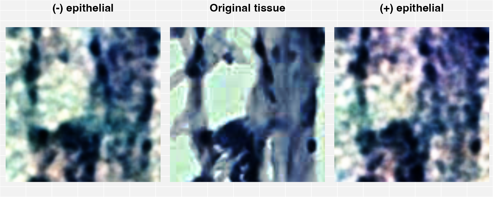

Spatial_Transcriptomic_modalities.Rmd## Loading required package: Matrix
# Load ggplot2
library(ggplot2)
# Load grid for ggplot2
library(grid)
# Load gridExtra for ggplot2
library(gridExtra)
# Compose a list of:
# Gene expression and,
# Pixel data
# Given it is a list, can be composed of more sets ...
data_list <- list(ST_breast_gex_non.tumour = as.matrix(BC_data$non_tumour$gex),
ST_breast_pixel_non.tumour = as.matrix(BC_data_pixel)
)
# Extract configure default parameters
config <- gcode::extract_config(F)
# Initialise both alpha (first element), and beta (second element) with "irlba"
config$init <- c("irlba","irlba")
# Set both the dimension of alpha (i_dim), and dimension of beta (j_dim) to 500
config$i_dim <- 500
config$j_dim <- 500
# Set the pixel and gene matrix to have:
# Different alpha parameterised functions (alpha = c(1,2))
# Different beta parameterised functions (beta = c(1,2))
# Same latent "code" space (code = c(1,1))
join <- list(alpha = c(1,2), beta = c(1,2), code = c(1,1) )
# Run gcode with:
# data_list
# config
# join
# Other input variables set to default in gcode are (not used here):
# transfer - to transfer alpha / beta / code parameters
# recover - impute or predict missing values
gcode.non_tumour <- gcode::gcode(data_list = data_list, config = config, join = join)
source("./perturbation.R")
epithelial_set <- "^WNT|^HSP|^FKBP|^AGRN|^AMBN|^AMLEX|^BMP|^BRCA|^COL|^EFE|^FBLN|^FBN|^IGF|^LTB|^MGP|^RSP|^SMOC|^TGFB|^ZP|CAN$|^VIM|^CD44|^ANXA1|^ACTA2|^ITGA8|^FN1|^VCAM1|^ITGB2|^CAV1|^LAM"
image_id <- 1
decrease_perturbed_image_histology <- perturbation(image_histology = BC_data_pixel[image_id,],
gcode_model = gcode.non_tumour,
gene_list = gene_consensus$hgnc_symbol,
perturb_gene_set = epithelial_set,
delta = "-",
factor_delta = 0.05
)
increase_perturbed_image_histology <- perturbation(image_histology = BC_data_pixel[image_id,],
gcode_model = gcode.non_tumour,
gene_list = gene_consensus$hgnc_symbol,
perturb_gene_set = epithelial_set,
delta = "+",
factor_delta = 0.05
)
plot_clean_ggplot2(list(decrease_perturbed_image_histology,BC_data_pixel[image_id,],increase_perturbed_image_histology))
## NULL